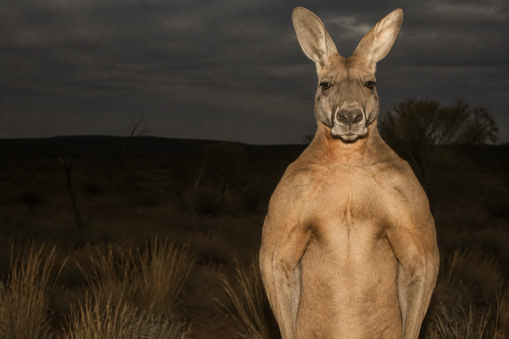

+ CUTE IS A COVER STORY.
BIG LEGS.
BIGGER
AGENDA.
They hop. They kick. They are not sorry.
It’s time someone stood up to Big Roo.
STATUS: UNACCOUNTABLE
01 / THE PROBLEM IN PLAIN SIGHT
A NATIONAL SYMBOL.
A COMPLETE LACK OF OVERSIGHT.
EVERYONE SEES
AN ICON.
WE SEE A PATTERN.
Somewhere along the way, we decided an animal with built-in boxing equipment deserved excellent PR.
We put it on airplanes. We gave it plush toys. We let the pouch distract us from the obvious.
Americans for Marsupial Accountability is here to ask the difficult questions. Starting with: why is it so jacked?
Let’s open the filesMaximum reported male red kangaroo weight.
Australian Museum ↗
Even the tail is doing leg work.
Biology Letters, 2014 ↗
Apologies received by this campaign.
Our inbox remains conspicuously quiet.
02 / THE DECLASSIFIED DOSSIER
OPEN FOR PUBLIC REVIEWTHE EVIDENCE
HAS LEGS.
Real biology. Deeply concerning optics.
Open a file. Draw your own conclusions.
INTEREST**TECHNICALLY NOT A PERSON.
STILL OF INTEREST.
03 / KNOW YOUR ADVERSARY
BUILT
DIFFERENT.
UNFORTUNATELY.
Every feature raises another question.
The face is the operation.
Soft eyes. Excellent ears. The face of an animal that knows exactly how good it looks on a tote bag. We consider this a conflict of interest.
04 / THE NARRATIVE MACHINE
DON’T BUY
THE HOP.
“They’re just gentle herbivores.”
“The pouch is adorable.”
“It’s a beloved national symbol.”
05 / PERSONAL EXPOSURE ASSESSMENT
YOU LOOK
COMPLACENT.
Four questions. A deeply opinionated algorithm.
Find out where you stand before it stands up.
Campaign quiz. Not a real measure of wildlife risk.
Do you currently reside in Australia?
ASSESSMENT COMPLETE
06 / THE ENCOUNTER SIMULATOR
YOU VS.
ABSOLUTELY NOT.
Think you could take one? We ran the numbers.
The numbers would like you to reconsider.
PROJECTED OUTCOME
A confidence problem.
You have a strong opinion. The kangaroo has a tail. Only one of those is load-bearing.
One imaginary encounter. One 198 lb opponent. Zero scientific validity.
07 / FOLLOW THE INFLUENCE
BIG ROO.
BIGGER REACH.
Who approved this level of brand penetration?
We are simply asking questions.
01 / INSTITUTIONAL CAPTURETHE COAT OF ARMS.+
Prime real estate next to the emu. An entire nation’s stationery. Nobody thought to run a background check on the pouch.
Campaign interpretation: a very successful logo placement.
02 / GLOBAL DISTRIBUTIONTHE AIRLINE.+
A flying kangaroo. Because apparently the ground-based version wasn’t enough. Our concern has now reached cruising altitude.
Campaign interpretation: the branding has international range.
03 / EARLY RECRUITMENTTHE PLUSH TOYS.+
Soft. Huggable. Positioned at eye level for children. You call it the gift shop. We call it the beginning of the funnel.
Campaign interpretation: exceptional work by the marketing department.
08 / THE HOP STOPS WITH YOU
NO DONATIONS. JUST QUESTIONS.TAKE A STAND.
KEEP YOUR DISTANCE.
“I will not be surprised by a kangaroo.”
That’s the pledge. Stay curious. Resist the branding.
Look up, occasionally, in a field.
Your pledge stays in this browser. No email required.